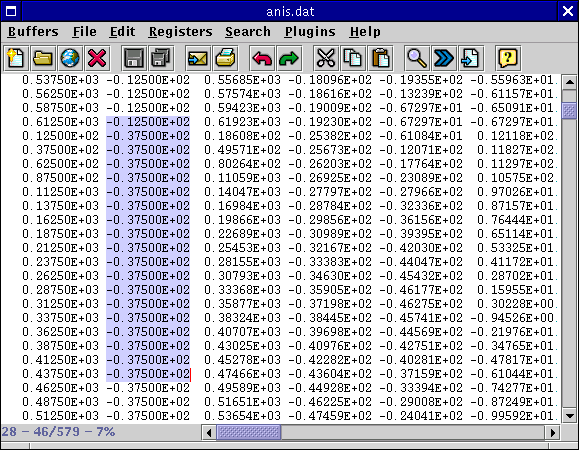

As mentioned in the section called Selecting Text in Chapter 3, selections can span rectangular regions. Deleting, replacing, copying, pasting, and so on works as expected on rectangles. All jEdit builtin commands are rectangle-aware; however, some plugins might not be. Note that because rectangular selections are implemented using character offsets, rather than absolute screen positions, they might not behave as one might expect when proportional-width fonts or tabs are used. For best results use monospaced fonts and soft tabs when editing columnar files.
A rectangular selection can be created by dragging the mouse while holding down Control. Holding down Shift and Control while clicking a location in the buffer will extend a rectangular selection. Edit>Selection>Rectangular Selection (keyboard equivalent: Control-\) will toggle the current selection between continuous and rectangular mode.
It is possible to select a rectangle with zero width but non-zero height. This can be used to insert a new column between two existing columns. Such "zero-width" selections are shown as a thin vertical line.
Figure 4-5. A rectangular selection
